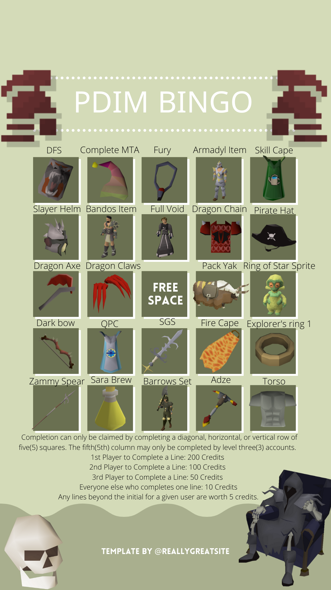

So the Official Website has made their update post for the New year and I am on my way with my own! It has been a few months since I made a website post
and have updated my own local branch but here I am trying to make a news post for anyone using my branch or is interested in my site.
Lets get started with this gigantic list of updates!
Blast Furnace
Thanks to a contributor named Cphunny, the minigame - Blast Furnace - was added and now is playable. Ever since the release of the city of Keldagrim have
players asked about the Blast Furnace. Being the excellent minigame for smithing experience people were truly concerned about it being added to escape the grind
the 2009 era of Runescape had with smithing. Now patch notes can have his easy smithing to feel one step closer to playing an authentic Runescape.
The minigame requires a smithing level of 60 and level 30 in Agility, firemaking and strength in order to interact with every bit of the blast furnace.
You can actually purchase 10 minutes of time for 2.5k if you are below the smithing level required. Lastly, Ordan can un-note Adamant and Rune at a very high gp price.
This video was provided by Cphunny who had created a guide on the Blast Furnace. Enjoy! make sure you catch him
in the 2009scape Official Discord if you play the official server!
Time to Crest!
Holy Smokes! We are looking at 2009scape's 38th quest - Family Crest. Who whould've thunk
we would have a release of a quest and minigame in the same update. Well, we did so head over to
Dimintheis in South-East Varrock to start the quest. You do not want to miss out on the imbued gauntlets!
Please give a shout out to both Crash and Aweinstock for making this happen!
Hardcore Ironman/woman Rework
A late RFC in the Official labs of Git took place seeing of a rework of the Hardcore ironman accounts.
Hardcore Irons before December 15th, 2020 will keep the old mechanics of hardcore
ironmen when the user dies their account becomes a regular Iron account.
New Hardcore Irons after December 15th, 2020 will be tagged as Permadeath.
On Death, these new Hardcore Irons wil be reset to the starting area, being forced to start over
from scratch.
The new Hardcore Irons will also be able to pick 10x XP rates upon account creation,
though this will no currently extend to other account types.
New Hardcore Irons will not be allowed to de-Iron.
Safe Deaths in minigames are still safe from account reset!
If you do decide to make a Hardcore Iron account there is a fun little bingo challenge going on. You can
grab this fun template right here.

Make sure you show off your progress in their PDIM-BINGO channel in their discord ( Exclusive to Discord only sadly )
Shooting Stars
In this update Shooting stars's discovery bonus experience is now gradually disbursed instead of a lump sum.
Brand New Shooting Star Bots that will spawn and help mine for the stars higher than tier 5.
Summoning Quality of Life
Allow renewing summoning familiars and makes BoBs drop items on dismissal even if their
owners are ironmen
Additional Bank Space
Originally written by Alex - our original Singleplayer Updater volunteer, was a RFC for extra bank space
so he could hold the extra junk in more space. Brought back up this year came the bank request which just got approved.
For a 5m gp fee, you are able to speak with a bank teller to purchase more bank space. This increases your bank space
to a total of 992 banks spaces.
Additional Additions A.K.A AA
Fishing and Fishing trawler now use closer-to-emperical formula.
Fixed Wine of Zamorak pickup interaction.
Static clue drops i.d's replaced with their appropriate proxy values.
Daily Battlestaves from Zaff now cost 7k each.
Cannon ball had a smithing rewrite and animation improvements.
Enhanced Excalibur now has its correct special attack, healing over time for 20HP.
Barrows equipment now lasts for 15 hours of combat instead of 40 minutes of combat.
Ruby bolts special attack damage have been properly uncapped, and the Corporeal Beast-specific maximum damage cap has been added, capping the spec damage against Corp to a maximum of 100 damage.
Add Mort myre stems and pears to bloom's effect, and add the sound effect for bloom.
Add proper sound effects for the explorer's ring and fix Leaf-bladed sword's sound effects.
Bug Fixes
Fix granting HP xp on controlled
Spending points to cancel your slayer task no longer sets your task streak to 0.
Fix a bug where clue scrolls were rerolled to easy for most NPCs
Backend & Project
Implemented server performance monitor, many performance improvements
Server configuration language has been changed from JSON to TOML.
Split Server and Client into separate Git repositories. Cache moved to LFS.
Project README updated to reflect new project structure
 Up to Legacy Update List
Up to Legacy Update List Refresh
Refresh Summer
Summer